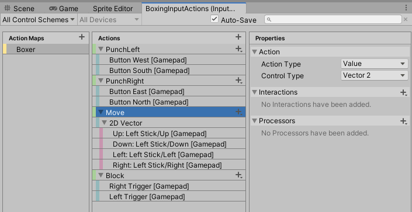
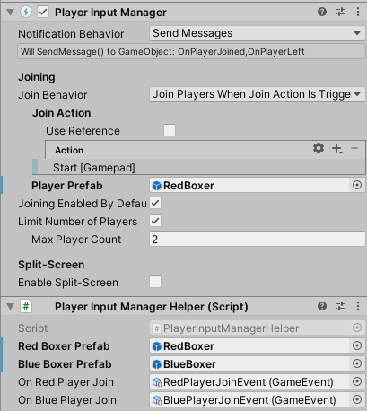

Working With Unity's New Input System
How I implemented local multiplayer in Cartoon Boxing.


For my third project in Unity I wanted to move away from the legacy input system and move on to using the new input system. I thought it would be fun to create a multiplayer game and at the same time learn how to add controller support. As a bonus I would also learn how to add haptic feedback.
At first I was going to create a Street Fighter 2 clone using actual Street Fighter sprites I found doing a Google search, but what I found I couldn't make work because they weren't spaced properly. So, I went for whatever else I could find after searching free art on the web for fighting games.
After I had a gameplan (literally) I read Unity's blog post on the new input system (you can find that here). After importing all of the game sprites and setting up the game scene (it only has one scene) I started mapping out ActionMap I would use in the game.
The boxer sprites I found have only a few animations, which is fine since I only wanted to spend a couple days on this. Here's what I had to have inputs for:
- Left Punch
- Right Punch
- Upwards Punch
- Walk Forwards
- Walk Backwards
- Block
Which resulted in me creating this ActionMap using the new input system:
The next step was configuring the input to support local multiplayer. To do this you add a Player Input component on your player GameObject.
Here's what mine looks like in Cartoon Boxing:
If you'll notice since I've chosen the Send Messages behavior the UI helpfully tells me that it will call functions named the same as my input actions, prepended with On: OnLeftPunch(), OnRightPunch(), OnMove(), and OnBlock()
Those of you that are familiar with the InputManager may have written code something like this in the MonoBehavior for a Cartoon Boxer:
void Update()
{
horizontalInput = Input.GetAxis("Horizontal");
verticalInput = Input.GetAxis("Vertical");
bool pressedLeftPunch = Input.GetButtonDown("LeftPunch");
bool pressedRightPunch = Input.GetButtonDown("RightPunch");
if (pressedLeftPunch) DoLeftPunch();
else if (pressedRightPunch)
{
if (verticalInput == 1) DoUppercut();
else DoRightPunch();
}
}
void FixedUpdate()
{
rigidbody.velocity = new Vector2(horizontalInput * movementSpeed, rigidbody.velocity.y);
}Here's what the code looks like using the new input system in a Cartoon Boxer's MonoBehaviour (mostly):
private void OnMove(InputValue inputValue)
{
movement = inputValue.Get<Vector2>();
}
private void OnBlock(InputValue inputValue)
{
isBlocking = inputValue.isPressed;
}
private void OnPunchLeft(InputValue inputValue)
{
DoLeftPunch();
}
private void OnPunchRight(InputValue inputValue)
{
if (movement.y > 0)
{
DoUppercut();
}
else
{
DoRightPunch();
}
}As you can see it's much cleaner code, and definitely preferable to the old way of doing things.
The next step was to figure out how to allow players (max of 2 total) to join the game using whatever gamepad they happen to be using. Since I chose to use the generic Gamepad in my action bindings the general controller support was done. Onto player joining, and for this you can use the PlayerInputManager.
The first thing to know about this component is that it's a Singleton
That's right... a Singleton
1994 called, it wants it's pattern back.
When getting the instance in code you refer to the global variable instance on the PlayerInputManager.
In Cartoon Boxing I added a PlayerInputManager component to a GameObject and configured it to require the player to press the start button to join.
Notice that the component asks for a single prefab. Currently it seems to make the assumption each player will use the same prefab. That's definitely not what I wanted since I had two different boxers, one being red, the other blue.
To work around this I added another component which listens to the OnPlayerJoined() message from the PlayerInputManager. When a player joins I simply swap the playerPrefab. Here's all of the code for that:
using UnityEngine;
using UnityEngine.InputSystem;
public class PlayerInputManagerHelper : MonoBehaviour
{
public GameObject redBoxerPrefab;
public GameObject blueBoxerPrefab;
public GameEvent onRedPlayerJoin;
public GameEvent onBluePlayerJoin;
private void OnPlayerJoined(PlayerInput playerInput)
{
if (PlayerInputManager.instance.playerPrefab == redBoxerPrefab)
{
onRedPlayerJoin.Raise();
}
else if (PlayerInputManager.instance.playerPrefab == blueBoxerPrefab)
{
onBluePlayerJoin.Raise();
}
PlayerInputManager.instance.playerPrefab = blueBoxerPrefab;
}
}If you're curious about the GameEvent usages here all I will say in this article is that adopting this pattern really helped keep my game code loosely coupled and made it way less confusing. I'll be writing about this pattern soon so stay tuned!